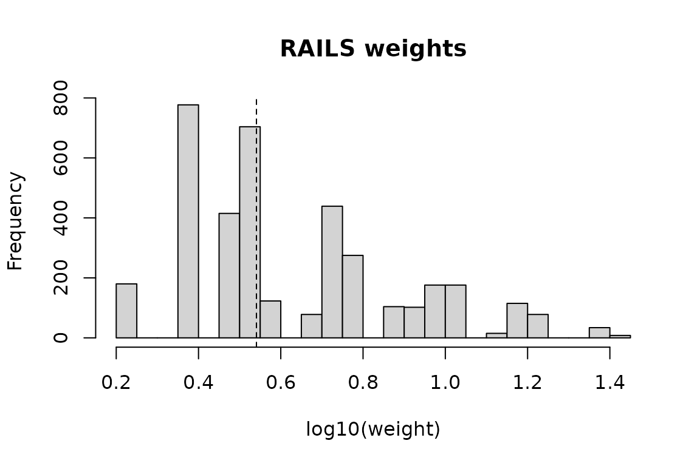

The problem
A volunteer biobank recruits whoever signs up. The people who sign up are not a random draw from the population: they skew older, wealthier, better educated, and — the part that matters — those characteristics are associated with the health outcomes the biobank exists to study. Any prevalence estimated directly from the cohort is biased for the population.
A probability survey, by contrast, is designed. Its design weights are known, and its margins represent the population. It is usually far smaller than the biobank and does not measure what the biobank measures.
RAILS uses the second to fix the first.
A population where we know the answer
Real biobank microdata cannot be redistributed, so this vignette uses
rails_simulate(), which generates a population, a
probability sample, and a volunteer sample whose inclusion depends on
the same covariates that drive the outcome. Because we simulated the
population, we know the truth.
pop <- rails_simulate(20000, seed = 42)
aou <- pop[pop$aou == 1, ] # the volunteer sample
ref <- pop[pop$s == 1, ] # the probability sample
ref$dweight <- 1 / ref$ps # its design weights
c(population = nrow(pop), volunteer = nrow(aou), reference = nrow(ref))
#> population volunteer reference
#> 20000 3799 4878The bias is visible before any modelling. The volunteer sample over-represents the higher income groups:
round(rbind(
population = prop.table(table(pop$income)),
volunteer = prop.table(table(aou$income))
), 3)
#> p0-10 p10-50 p50-90 p90-100
#> population 0.100 0.40 0.400 0.10
#> volunteer 0.056 0.32 0.465 0.16and its raw outcome prevalence is off:
Fitting
rails() takes the two samples, the covariates they
share, and the reference sample’s design weights. Two further arguments
say which models the search runs between: start is the
model taken as given, scope the largest model selection may
reach.
Here the volunteer-selection process contains two-way structure, so we start from main effects and let the forward test look for the two-way interactions:
fit <- rails(
np = aou,
ref = ref,
vars = c("agegroup", "sex", "income"),
weights_ref = "dweight",
start = 1, # main effects, taken as given
scope = 2, # two-way interactions are the candidates
verbose = FALSE
)
fit
#> RAILS fit
#> covariates : agegroup, sex, income
#> start model : 3 term(s)
#> scope : 6 term(s), so 3 candidate(s)
#> selected : 2 term(s) at alpha = 0.05
#> agegroup:sex, sex:income
#> raked : 2 of 2 selected term(s) survived the stepwise walk
#> cells : 24
#> weights : n = 3799, sum = 19,875.78, range 1.65 to 25.9Three things happened. A propensity model was fitted on the starting
model. Every term in scope but not in start
was offered to a forward likelihood-ratio test, and those passing at
alpha = 0.05 were kept. Then the selected terms were added
back one at a time, raking to the reference margins at each step and
stopping at the first step that failed to converge.
The defaults are start = 2, scope = 3, which is the
published estimator: main effects and two-way interactions taken as
given, three-way interactions offered for selection.
summary() shows the selection path and how well behaved
the weights are:
summary(fit)
#> RAILS fit summary
#>
#> Covariates: agegroup, sex, income
#> Model : 3 term(s) in the starting model, 3 candidate(s) in scope, alpha 0.05
#>
#> Selected terms (2):
#> 1. agegroup:sex
#> 2. sex:income
#>
#> Raked to 5 term(s); full walk completed.
#>
#> Weight diagnostics:
#> sum var non_positive_ratio below_one
#> 19875.7840 16.4808 0.0000 0.0000
#> min max
#> 1.6543 25.8569
#>
#> Design effect (Kish): 1.602
#> Effective sample size: 2371.5The design effect is the price of weighting: it is the factor by which unequal weights inflate the variance of a mean, so an effective sample size well below the nominal one is normal and expected. A design effect that is very large signals a handful of records carrying the estimate, which is worth looking at:
plot(fit)
Using the weights
w <- weights(fit)
c(truth = mean(pop$y),
unweighted = mean(aou$y),
rails = sum(w * aou$y) / sum(w))
#> truth unweighted rails
#> 0.1952000 0.2545407 0.2051237The weights sum to the population total implied by the reference sample, and reproduce its margins by construction:
Standard errors
rails_var() gives the standard error and interval for
the weighted mean. By default it reports the simplified
variance, which treats the weights as fixed:
round(rails_var(fit, aou$y, truth = mean(pop$y)), 5)
#> mu_hat var_naive se_naive ci_naive_lower ci_naive_upper
#> 0.20512 0.00006 0.00762 0.19019 0.22006
#> cover_naive N_hat n_NP
#> 1.00000 19875.78403 3799.00000But the weights were estimated, not given. The stacked variance accounts for that, through a sandwich over three estimating equations: the propensity score, the raking constraints, and the mean itself. Ask for both to see the gap:
v <- rails_var(fit, aou$y, type = "both", truth = mean(pop$y))
round(v[c("mu_hat", "se_naive", "se_full", "ratio_full_naive")], 5)
#> mu_hat se_naive se_full ratio_full_naive
#> 0.20512 0.00762 0.00747 0.98061ratio_full_naive is the ratio of the two. Note that it
is below 1 here: the stacked figure is the smaller one.
Ignoring the propensity stage tends to understate, but raking to known
population margins removes variance the way a regression estimator does,
and in this example the second effect wins. The stacked form is the one
to report because it accounts for how the weights were built – not
because it is the more conservative number.
The corresponding interval:
The simplified form is the cheaper of the two by a wide margin – it
needs no model matrix at all – which is why it is the default. The
stacked form rebuilds individual-level model matrices, so it also needs
the fit to have been made with keep_data = TRUE.
Downstream analysis
For anything beyond a mean, hand the weights to survey:
des <- rails_design(fit, aou)
survey::svymean(~y, des)
#> mean SE
#> y 0.20512 0.0076Bear in mind that standard errors from this object are the naive
ones, for the same reason as above. Use it for point estimates and model
fitting; use rails_var() for inference on a mean.
Where to go next
-
vignette("subgroup-rails")— running the estimator within strata, when subgroup estimates are the goal. -
?rails— the full argument list, includingstart/scopefor which models the search runs between, andaggregatedfor pre-built cell tables. -
?rails_cellsand?rails_totals— building the aggregated inputs yourself, which is what you want when the microdata will not fit in one data frame. -
?pums_reference— building the reference sample from ACS PUMS instead of from a simulation:pums_fetch()downloads it,pums_recode()bands the raw ACS codes into these same analysis variables, andpums_reference()returns the cleaned records, the cell table and the margins together.